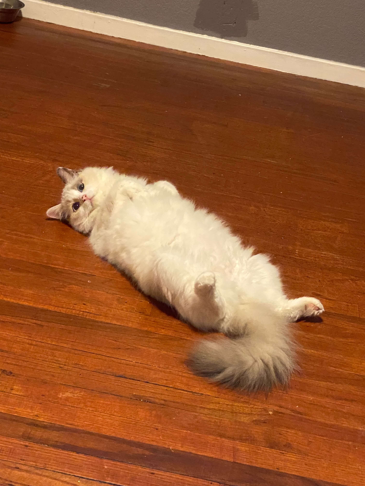
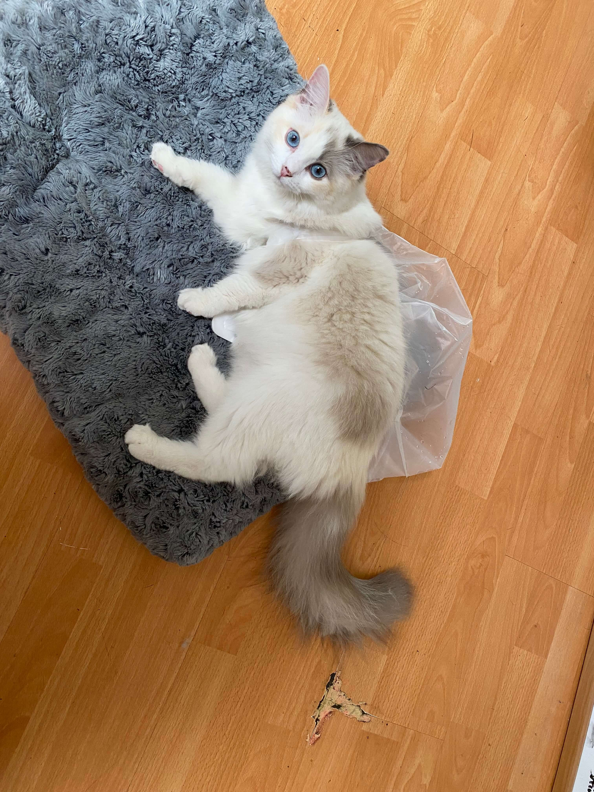
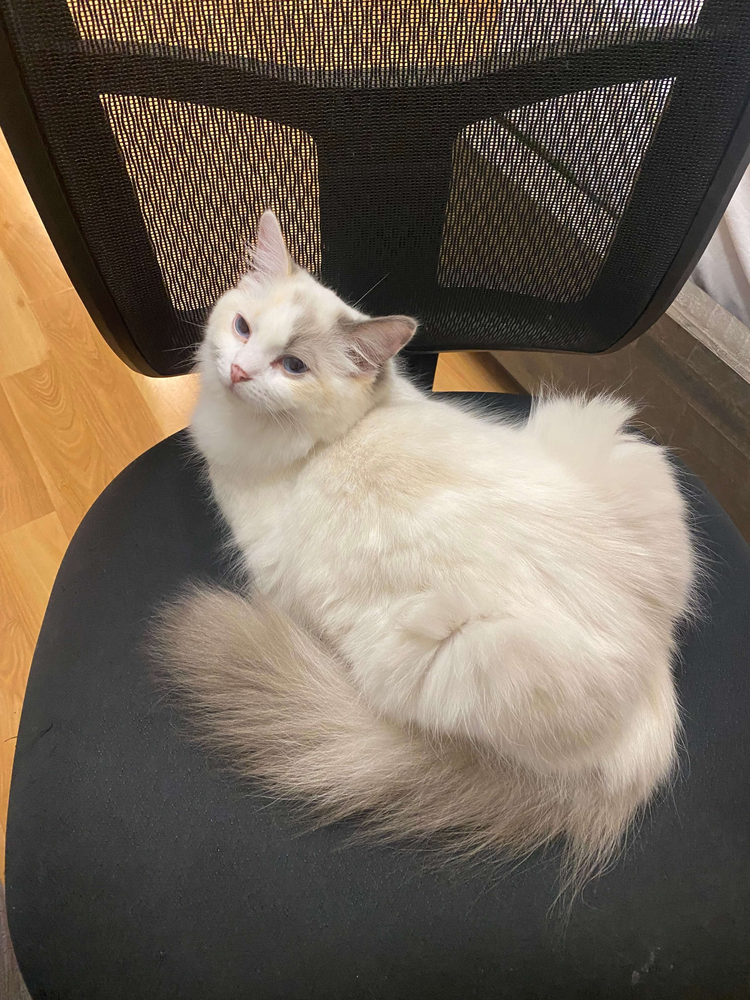

We are a Bay Area ragdoll cattery. Get your ragdoll kittens now!
Queen Ivy: Blue Cream Bicolor
  Ivy is a Blue Cream Bicolor, or a Blue Cream Tortie. It's one of the rarest colors of ragdolls. Other than the traditional blue bicolor, Ivy also has cream on her, which is a lighter shade of flame/red. When I was planning the cattery, I wasn't hoping for a Blue Cream (I needed to be reasonable, the chance of me getting any rare color was very low), but my breeder surprised me with Ivy. I am so lucky to have her.
When Ivy came, she immediately jumped out and started playing non stop. She was not afraid of anything in the house, other than my Samoyed Walwal (to be fair, it's a gaint dog). Since then, she has became the social queen of the house. When my friends' dogs are visiting, Ivy is always the first to say hello, ad trys to play with everyone.

Well, the only complain I have for Ivy, is that she loves food TOO MUCH. She is constantly eating. Happy? She is eating. Just woke up? She is eating. Got scared by Walwal? She is still eating. She not only steals other cats' food, she has stolen my chicken, and even dog food. (Hello, shouldn't dog food be similar to your own food??) No wonder she is such a big girl now. I hope she can keep being happy and enjoy all the good food in the house! (Let me hide my plant food somewhere...)